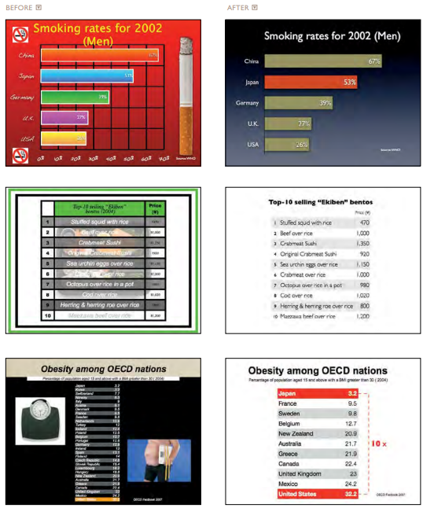

One Word to summarize this section: "Concise"
The word "concise" effectively encompasses all of Chapter 6 of Garr Reynolds' Presentation Zen.
Less is more
Why say something in 100 words when you could say it in 10? Why use words when a picture is much more effective (and easier for you!). While Garr's book is about slidedeck presentations, the notion of being concise is at the heart of good UX/UI design, including my own line of work. I feel I often try to write too much in order to appear smarter to my peers or fill up the empty space in what I am presenting to my viewers, but information overload is honestly just a crutch that hurts everyone. The audience feels frustrated with me for being unable to effectively communicate what I want to say, and I put in a lot more work just to have a sub-par product. Make every addition a deliberate one, and understand how everything is related. Just look below at Garr's examples of how it can entirely change the quality level of a slide!
The difference is as clear as night and day:
I couldn't choose just one. Garr has so many good slide before/afters!
Credit
Slides and Reading:
Reynolds, Garr. Presentation Zen: Simple Ideas On Presentation Design and Delivery. Berkeley, CA, New Riders Pub, 2008.